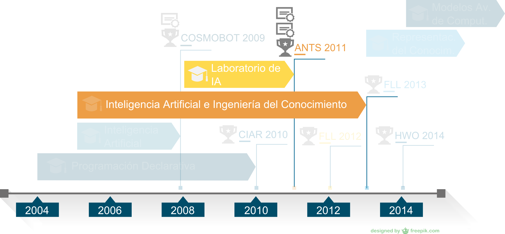

.
Universidad de Granada
Departamento de Arquitectura y Tecnología de Computadores
Tesis
Inteligencia Computacional y Juegos Aplicados a la Enseñanza
Presentado por José Carpio Cañada Directores: Juán Julián Merelo Guervós y Victor Manuel Rivas Santos
Índice
Introducción
Tesis
Metodología
que utiliza lamecánica de los juegos
y la participación encompeticiones
para enseñarInteligencia Computacional
Definición
Inteligencia Computacional
- Redes Neuronales
- Computación Evolutiva
- Inteligencia Emergente
- Sistemas Inmunes Artificiales
- Sistemas Difusos
Definición
Gamificación
o ludificación se utiliza para referirnos al uso de mecánicas de juegos en ambientes o entornos no lúdicos.
Sebastian Deterding y otros: From game design elements to gamefulness: defining gamification.
Motivación
La educación formal se caracteriza por un modelo que presenta objetivos, contenidos y metodologías rígidas para profesores y estudiantes.
Claudio Zaki Dib: Formal, non-formal and informal education: Concepts/applicability.
La educación formal solo se adapta a un
18% de estudiantes no universitarios
y a un
5.1%
de los estudiantes universitarios.
James A Banks y otros: In and out of school in diverse environments.
Sin embargo, la educación informal permite a los estudiantes participar en su aprendizaje de forma proactiva a través de metodologías flexibles y con diferentes estilos de aprendizaje.
Baiyun Chen and Thomas Bryer: Investigating instructional strategies for using social media in formal and informal learning.
La educación informal y el aprendizaje a través del juego permite al alumno construir su propio conocimiento, basado en la comprensión de sus propias experiencias.
George W Gagnon and Michelle Collay: Constructivist learning design: Key questions for teaching to standards.
Los juegos en la enseñanza proporcionan espontaneidad, flexibilidad e interactividad apoyando así la experiencia de aprendizaje.
David G Moursund: Introduction to using games in education:
A guide for teachers and parents.
Alan Turing establece el primer juego que podía ser jugado de forma automática por máquinas utilizando algoritmos lógicos.
Alan M Turing: Computing machinery and intelligence
Este hecho, transformó los juegos en una herramienta exitosa para enseñar gran variedad de métodos prácticos gracias a su habilidad para motivar a los estudiantes.
La motivación representa un factor clave para aprender y obtener resultados académicos exitosos.
Kourosh Amrai y otros: The relationship between academic motivation and academic achievement students
Objetivos
Objetivo principal:
Probar que la gamificación mejora el proceso de aprendizaje de la Inteligencia Artificial.
Sub objetivo 1:
Proponer una metodología que ayude a los profesores a mejorar la experiencia de aprendizaje de sus alumnos.
Sub objetivo 2:
Validar la metodología a través de experiencias reales en el aula.
Sub objetivo 3:
Introducir a los alumnos en la investigación con la publicación de un artículo científico.
Metodología
Sub objetivo 1
Metodología
Metodología
|
|
|
Metodología
|
|
|
Metodología
|
|
|
Metodología
|
|
|
Metodología
|
|
|
Metodología
|
|
|
Metodología
|
|
|
Metodología
|
|
|
Metodología
|
|
|
Experiencias docentes de gamificación
Sub objetivo 2
Tomamos parte en
7 competiciones
Cosmobot2009 - Cosmobot2010 - CIAR2010 - ANTS2011 - FLL2011 - FLL2012 - HWO2014
Competimos en
4 competiciones
Cosmobot2009 - Cosmobot2010 - ANTS2011 - HWO2014
Asignaturas y Competiciones

Cosmobot 2009
Asignaturas Cosmobot 2009
Cosmobot 2009
| Ámbito: | Nacional |
| Lugar: | CosmoCaixa Madrid |
| Año: | 2009 |
| Modalidades: | Robots seguidores de líneas y luchadores de sumo |
| Competidores: | 29 |
| Participación: | 1 (5 personas) |
| Presupuesto: | 1.500€ / Universidad de Huelva |
| Publicación: | International Journal of Engineering Education (IJEE) |
Cosmobot 2009
- Programar código fiable
- Compartir conocimientos
- Respeto de los adversarios
- Los primeros de Andalucía
- Repetir la experiencia
- Publicación de la experiencia
Artificial Intelligence Challenge Ants 2011
Asignaturas Ants 2011
AI Challenge Ants 2011
| Ámbito: | Internacional |
| Lugar: | Sitio web de la competición |
| Año: | 2011 |
| Modalidades: | Juego online |
| Competidores: | 7897 |
| Participación: | 18 personas |
| Presupuesto: | 0€ |
| Publicaciones: | (2) JCAL e IWANN |
Lanzar partida
AI Challenge Ants 2009
- Programar código eficiente
- Compartir conocimientos
- Aprender nuevos lenguajes
- Reto internacional
- Primera Universidad Española
- Alta participación
- Dos Publicaciones
- Motor de la motivación
Publicaciones
Publicamos
4 artículos
3 de ellos de la experiencia en 2 competiciones
Cosmobot2009 - ANTS2011
Publicación 1
| Título: Evolving two-dimensional fuzzy systems | |
|
Revista: Fuzzy Sets and Systems, 2003 | |
| Autores: Víctor M. Rivas, J.J. Merelo, I. Rojas, G. Romero, P.A. Castillo, J. Carpio | |
| Factor de impacto: | 0,577 |
Publicación 2
| Título: From Classroom to Mobile Robots Competition Arena: An Experience on Artificial Intelligence Teaching | |
|
Revista: The International journal of engineering education, 2011 | |
| Autores: José Carpio Cañada, T. J. Mateo Sanguino, S. Alcocer, A. Borrego, A. Isidro, A. Palanco, J.M. Rodríguez | |
| Factor de impacto: | 0,418 |
Publicación 3
| Título: Evolving the Strategies of Agents for the ANTS Game | |
|
Congreso: International Work-Conference on Artificial Neural
Networks (IWANN), 2013 | |
| Autores: José Carpio, Pablo García-Sánchez, Antonio Miguel Mora, Juan Julián Merelo Guervós, Jesús Caraballo, Fermín Vaz, Carlos Cotta | |
| Relevancia del congreso atendiendo al "Computer Science Conference Ranking": | Rank 3 |
Publicación 4
| Título: Open classroom: enhancing student achievement on artificial intelligence through an international online competition | |
|
Revista: Journal of Computer Assisted Learning, 2014 | |
| Autores: J. Carpio Cañada, T.J. Mateo Sanguino, J.J. Merelo Guervós, V.M. Rivas Santos | |
| Factor de impacto: | 1,023 |
Resultados
Conclusiones
Conclusión 1:
La metodología propuesta para el uso de la gamificación en el aprendizaje de la Inteligencia Artificial es adecuada y obtiene mejoras significativas en aspectos como la motivación y la mejora de los conocimientos adquiridos.
Conclusión 2:
Que es posible introducir de forma satisfactoria estas experiencias dentro de los planes de estudios tradicionales y que es posible compatibilizar el enfoque más tradicional de la enseñanza.
Conclusión 3:
Que en el presente trabajo encontrará una guía para poner en práctica una experiencia de gamificación en el aula con información sobre recursos necesarios y una orientación sobre la planificación de la actividad.
Conclusión 4:
Que es posible utilizar la experiencia de gamificación en el aula como una herramienta que sirva para introducir a los alumnos en la investigación.
Trabajos futuros
Ampliar la participación a más asignaturas y un mayor número de alumnos.
Publicar la experiencia de competiciones anteriores.
Ya está en marcha la próxima competición: Desafío Solar Costa de la Luz 2016.